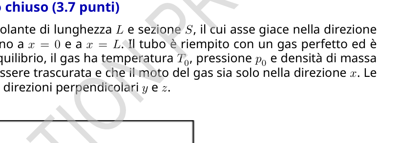
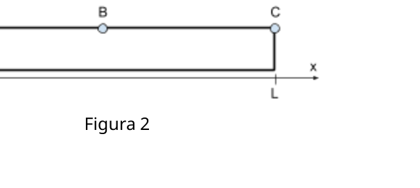
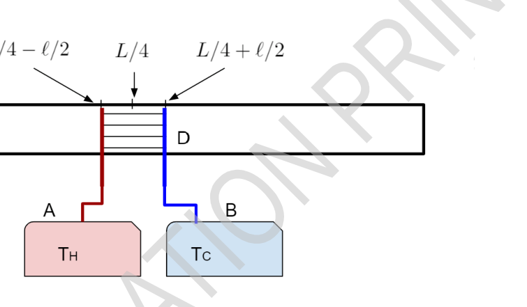

Motore termoacustico
Theory Q3-1 Italiano (Italy) Motore termoacustico Un motore termoacustico è un dispositivo che converte il calore in energia acustica, o onde sonore - una forma di energia meccanica. Come molte altre macchine termiche, il motore termoacustico, invertendo il ciclo, può essere usato come frigorifero, utilizzando il suono per trasferire calore da una sorgente fredda a una calda. Le alte frequenze a cui opera il motore termoacustico riducono la conduzione di calore ed eliminano la necessità del confinamento in ambienti di lavoro. A differenza di molti altri tipi di motore, il motore termoacustico non ha parti in movimento eccetto il fluido stesso. L’efficienza delle macchine termoacustiche è tipicamente minore di quella di altri tipi di macchine, ma ha vantaggi di messa a punto e di costi di manutenzione. Questo crea opportunità per l’applicazione all’utilizzo di fonti rinnovabili, come nelle centrali solari o nello sfruttamento del calore residuo. La nostra analisi si focalizzerà sulla creazione di energia acustica nel sistema, ignorando la conversione in altre forme di energia per muovere dispositivi esterni. Parte A: Onde sonore in un tubo chiuso (3.7 punti) Si consideri un tubo termicamente isolante di lunghezza Le sezione S, il cui asse giace nella direzione x. Le due estremità del tubo si trovano a x= 0 e a x= L. Il tubo è riempito con un gas perfetto ed è chiuso a entrambe le estremità. All’equilibrio, il gas ha temperatura T0, pressione p0 e densità di massa ρ0. Si assuma che la viscosità possa essere trascurata e che il moto del gas sia solo nella direzione x. Le proprietà del gas sono uniformi nelle direzioni perpendicolari ye z. Figura 1 A.1 Quando si forma un’onda sonora stazionaria, gli elementi di gas oscillano nella direzione xcon pulsazione ω. L’ampiezza delle oscillazioni dipende dalla posizione di equilibrio xdi ogni elemento di gas lungo il tubo. Lo spostamento longitudinale di ogni elemento di gas dalla sua posizione di equilibrio xè dato da u(x, t) = asin(kx) cos(ωt) = u1(x) cos(ωt) (1) (notare che qui la variabile udescrive lo spostamento di un elemento di gas)
dove una costante positiva, k= 2π/λè il numero d’onda e λè la lunghezza d’onda. Qual è la massima lunghezza d’onda possibile λmax in questo sistema? 0.3pt Si assuma in tutto il problema un modo di oscillazione con λ= λmax. Ora si consideri una sottile porzione di gas, situata a riposo tra xe x+ ). Per effetto dell’onda longitudinale della domanda A.1, la porzione oscilla lungo l’asse xe subisce un cambiamento di volume e di altre proprietà termodinamiche. Nei prossimi quesiti si assuma che tutti questi cambiamenti delle proprietà termodinamiche siano piccoli rispetto ai valori non perturbati delle quantità stesse.
Theory Q3-2 Italiano (Italy) A.2 Il volume V(x, t) della porzione oscilla intorno al valore di equilibrio V0 = si può esprimere come V(x, t) = V0 + V1(x) cos(ωt). (2) Si calcoli un’espressione di V1(x) in funzione di V0, a, ke x. 0.5pt A.3 Si assuma che la pressione totale del gas, per effetto dell’onda sonora, si esprima nella forma approssimata p(x, t) = p0 ) cos(ωt). (3) Considerando le forze agenti sulla porzione di gas, si calcoli l’ampiezza p1(x) dell’oscillazione di pressione al primo ordine. Si esprima il risultato in funzione della posizione x, della densità di equilibrio ρ0, dell’ampiezza adello spostamento e dei parametri dell’onda ke ω. 0.7pt Alle frequenze acustiche, la conduttività termica del gas può essere trascurata. Si tratti l’espansione e contrazione delle porzioni di gas come puramente adiabatica, che soddisfa la relazione pVγ= const, dove γè la costante adiabatica. A.4 Si utilizzino la relazione data e i risultati delle domande precedenti per calcolare un’espressione della velocità del suono c= ω/knel tubo, approssimando al prim’ordine. Esprimere la risposta in funzione di p0, ρ0 e della costante adiabatica γ. 0.3pt A.5 La variazione di temperatura del gas dovuta all’espansione e alla contrazione adiabatica causata dall’onda sonora assume la forma: T(x, t) = T0 ) cos(ωt). (4) Calcolare l’ampiezza T1(x) delle oscillazioni di temperatura in funzione di T0, γ, a, ke x. 0.7pt A.6 Solo in questa domanda, si assuma una debole interazione termica tra il tubo e il gas. Come conseguenza, l’onda sonora stazionaria rimane con buona approssimazione invariata, ma il gas può scambiare piccole quantità di calore con il tubo. Il riscaldamento dovuto alla viscosità è trascurabile. Per ognuno dei punti in figura 2 (A, C alle estremità del tubo, B al centro) stabilire se la temperatura del tubo in quel punto aumenterà, diminuirà o rimarrà la stessa dopo un lungo tempo. 1.2pt Figura 2
Theory Q3-3 Italiano (Italy) Parte B: Amplificazione di onde sonore indotta da un contatto termico esterno (6.3 punti) Una pila di lamine sottili e ben distanziate una dall’altra è inserita nel tubo. Le lamine della pila sono allineate parallelamente all’asse del tubo, così da non ostacolare il flusso del gas lungo il tubo. Il centro della pila è posizionato a x0 = L/4. La pila ha una larghezza l’asse del tubo, riempiendo tutta la sua sezione trasversale. Gli estremi destro e sinistro della pila sono mantenuti a una differenza di temperatura τ. L’estremo sinistro della pila, a xH= x0 , è mantenuto da una sorgente termica esterna alla temperatura TH= T0 + τ/2. Allo stesso tempo il suo estremo destro, a xC= x0 + l/2, è mantenuto alla temperatura TC= T0 . La pila di lamine permette un lieve flusso di calore longitudinale che permette di mantenere un gradiente di temperatura costante tra i suoi estremi, tale che Tpiatto(x) = T0 l τ. Figura 3. Rappresentazione del sistema. (A) e (B) sono rispettivamente la sorgente calda e la sorgente fredda. (D) rappresenta la pila. Per analizzare l’effetto del contatto termico tra la pila di lamine e il gas sulle onde sonore nel tubo, si facciano le seguenti assunzioni: • Come nella parte precedente, tutte le variazioni delle proprietà termodinamiche sono piccole rispetto ai valori imperturbati. • Il sistema opera nello stato fondamentale di onda stazionaria con la massima lunghezza d’onda possibile. L’onda è modificata in modo trascurabile dalla presenza della pila di lamine. • La pila è molto più corta della lunghezza d’onda , e può essere posizionata sufficientemente lontana dai punti nodali dello spostamento e della pressione, in modo che lo spostamento u(x, t) u(x0, t) e la pressione p(x, t) , t) possono essere considerati uniformi lungo l’intera lunghezza della pila. • Si possono trascurate tutti gli effetti di bordo, dovuti alle porzioni di gas che entrano ed escono dalla pila. • La differenza di temperatura tra le estremità della pila, cioè tra le sorgenti calda e fredda, è piccola rispetto alla temperatura assoluta: . • La conduzione di calore attraverso la pila, attraverso il gas e lungo il tubo sono trascurabili. Le uniche cause significative di trasferimento di calore sono la convezione dovuta al moto del gas e la conduzione tra il gas e la pila.
Theory Q3-4 Italiano (Italy) B.1 Si consideri una specifica porzione di gas nella regione della pila, originariamente a x0 = L/4. Mentre la porzione si muove dentro la pila, la temperatura locale della parte di pila attraversata varia come segue: Tenv(t) = T0 cos(ωt). (5) Si esprima Tst in funzione di a, τe l. 0.4pt B.2 Al di sopra di quale differenza critica di temperatura τcr il gas trasporterà calore dalla sorgente calda alla sorgente fredda? Esprimere τcr in funzione di T0, γ, ke l. 1.0pt B.3 Ricavare l’espressione generale approssimata del flusso di calore dQ dtentrante in una piccola porzione di gas come funzione lineare delle velocità di cambiamento del suo volume e della sua pressione. Esprimere la risposta in funzione della velocità di cambiamento del volume dV dt, della velocità di cambiamento della pressione dp dt, dei valori di equilibrio della pressione e del volume della porzione p0 ,V0 e della cos
p.1 — Tubo chiuso con pistone e asse x

p.2 — Tubo con punti A, B, C, D e asse x

p.3 — Schema sorgenti calda e fredda con stack

Topic: Oscillations & Waves, Thermodynamics, Conservation of Energy Metodi: Wave Equation, Simple Harmonic Motion Analysis, First Law of Thermodynamics, Thermodynamic Cycle Analysis Competenze: Mathematical Modeling, Physical Reasoning Objects: Gas, Tube, Heat Engine Fonte: Testo (PDF) — p.1 Soluzione: Soluzioni (PDF)
Motore termoacustico
Theory Q3-1 Italian (Italy) Other, of a thickness of not more than 0,5% A thermoacoustic motor is a device that converts heat into acoustic energy, or sound waves - a form of mechanical energy. Like many other thermal machines, the thermoacoustic motor, reversing the It can be used as a refrigerator, using sound to transfer heat from a cold source In a hot spot. The high frequencies at which the thermo-acoustic motor operates reduce heat conduction and They eliminate the need for confinement in work environments. Unlike many other types of engines, the The thermo-acoustic motor has no moving parts except the fluid itself. The efficiency of thermo-acoustic machines is typically lower than that of other types of machines, but It has advantages in terms of set-up and maintenance costs. This creates opportunities for application the use of renewable sources, such as in solar power plants or in the exploitation of waste heat. Our own The analysis will focus on the creation of acoustic energy in the system, ignoring the conversion to other energy forms to move external devices. Part A: Sound waves in a closed tube (3.7 points) A thermal insulating tube of length S, whose axis lies in the direction of the x. The two ends of the tube are at x=0 and x=L. The tube is filled with perfect gas and it’s It’s closed at both ends. At equilibrium, the gas has temperature T0, pressure p0 and mass density ρ0. It is assumed that the viscosity can be neglected and that the motion of the gas is only in the x direction. Le The gas properties are uniform in the perpendicular directions y z. The following is the list of the following: A.1 When a stationary sound wave is formed, the gas elements oscillate in the direction x with pulse ω. The width of the oscillations depends on the equilibrium position of each gas element along the tube. The movement The longitudinal of each gas element from its equilibrium position is given da The following table shows the number of samples taken from the sample: (1) (note that here the variable u describes the displacement of an element of gas)
where is a positive constant, k= 2π/λ is the wave number and λ is the wave length. What is the maximum possible wavelength λmax in this The system? 0.3pt A mode of oscillation with λ= λmax is assumed throughout the problem. Now consider a thin portion of gas, lying at rest between x+ ). By the wave The longitudinal part of the A.1 question, the portion oscillating along the axis is subject to a change in volume and other thermodynamic properties. In the next few questions, it is assumed that all these changes in thermodynamic properties are small. the quantities themselves.
Theory
Q3-2
Italian (Italy)
A.2
The volume V(x, t) of the portion oscillates around the equilibrium value V0 =
It can be expressed as
V(x, t) = V0 + V1(x) cos(ωt)
(2)
A V1
0.5pt
A.3
The total pressure of the gas, as a result of the sound wave, is assumed to be
expressed in approximate form
p(x, t) = p0 ) cos(ωt).
(3)
Taking into account the force acting on the gas portion, the pressure oscillation amplitude p1(x) in the first order is calculated. The result is expressed as a function of the
position x, of the equilibrium density ρ0, of the width at the displacement and
The parameters of the wave are:
0.7pt
At acoustic frequencies, the thermal conductivity of the gas may be neglected. The expansion and the
The gas portion contraction as a purely adiabatic, which satisfies the pVγ= const ratio,
where γ is the adiabatic constant.
A.4
The data and results of previous questions are used to calculate a sound speed expression c= ω/knel tube, approximating the first order. Express the response as a function of p0, ρ0 and the constant
The following table shows the following:
0.3pt
A.5
The change in gas temperature due to expansion and contraction
Diabetic reactions caused by sound waves take the form of:
T(x, t) = T0 ) cos(ωt).
(4)
Calculate the width T1(x) of the temperature oscillations as a function of T0, γ,
a, ke x.
0.7pt
A.6
Only in this question is a weak thermal interaction assumed between the tube
and gas. As a result, the stationary sound wave remains with good approximation unchanged, but the gas can exchange small amounts of heat with the
the pipe. The warming caused by viscosity is negligible.
For each of the points in Figure 2 (A, C at the ends of the tube, B at the centre)
If the temperature of the pipe at that point increases, decreases or remains the
I’m going to be myself after a long time.
1.2pt
Figure 2
Theory Q3-3 Italian (Italy) Part B: Sound wave amplification induced by external heat contact (6.3 points) A pile of thin, well-distant sheets is inserted into the tube. The stack sheets are align parallel to the axis of the pipe so as not to impede the flow of gas along the pipe. The centre the stack is positioned at x0 = L/4. The battery has a width lax of the tube, filling the entire cross section. The right and left ends of the pile are kept at a difference of a temperature of τ. The left-hand side of the battery, at xH=x0 , is maintained by a heat source The following conditions shall apply: At the same time its far right, at xC=x0 + l/2, is maintained at TC=T0 . The sheet pile allows a slight longitudinal heat flow which allows a gradient to be maintained di temperatura costante tra i suoi estremi, tale che Tpiatto(x) = T0 l τ. Figure 3 is shown. Representation of the system. (A) and (B) are respectively the hot source and the cold spring. (D) represents the stack. To analyse the effect of the thermal contact between the sheet pile and the gas on the sound waves in the tube, They take the following positions: • As in the previous part, all variations in thermodynamic properties are small compared to the undisturbed values. • The system operates at the fundamental stationary wave state with maximum wavelength I’m sure you can. The wave is slightly altered by the presence of the sheet pile. • The stack is much shorter than the wavelength , and can be positioned sufficiently away from the nodal points of displacement and pressure, so that the displacement u(x, t) U(x0, t) and the pressure p(x, t) , t) can be considered uniform throughout the length The stack. • All onboard effects can be overlooked due to the portions of gas entering and leaving the vessel. from the pile. • The temperature difference between the ends of the stack, i.e. between hot and cold sources, is small with respect to absolute temperature: . • The conduction of heat through the battery, through the gas and along the pipe is negligible. Le The only significant causes of heat transfer are convection due to the motion of the gas and the conduction between the gas and the battery.
Theory Q3-4 Italian (Italy) B.1 Consider a specific portion of gas in the stack region, originally at x0 = L/4. As the portion moves into the pile, the local temperature the cross-stage part of the stack is as follows: Tenv(t) = T0 cos(ωt). (5) Tst is expressed as a, τe l. 0.4pt B.2 Above which critical temperature difference τcr the gas will carry heat From the hot spring to the cold spring? Express τcr as a function of T0, γ, ke l. 1.0pt B.3 Getting the approximate general expression of heat flow dQ Other in a small portion of gas as a linear function of the rate of change of its volume and pressure. Express the response according to the speed of change of volume dV dt, of the rate of change of the dp pressure The pressure and volume balance values of the p0 , V0 portion and the cos
p.1 Piston-engined closed tube and x-axis
p.2 Tube with points A, B, C, D and x axis
**p.3 ** Hot and cold spring scheme with stack
Topic: Oscillations & Waves, Thermodynamics, Conservation of Energy Metodi: Wave Equation, Simple Harmonic Motion Analysis, First Law of Thermodynamics, Thermodynamic Cycle Analysis Competenze: Mathematical Modeling, Physical Reasoning Objects: Gas, Tube, Heat Engine Fonte: Testo (PDF) — p.1 Soluzione: Soluzioni (PDF)